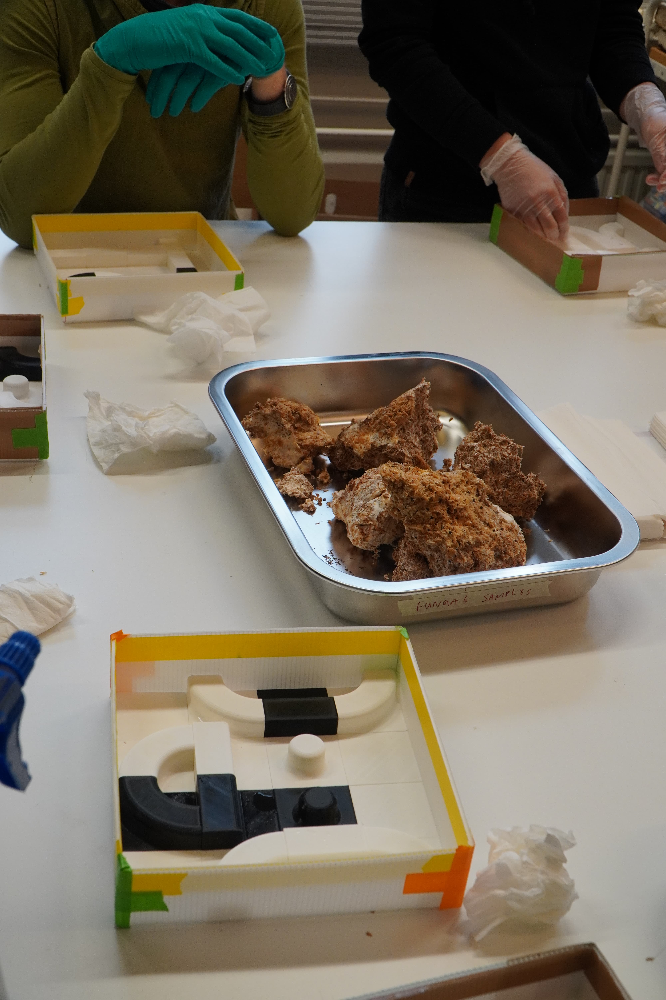
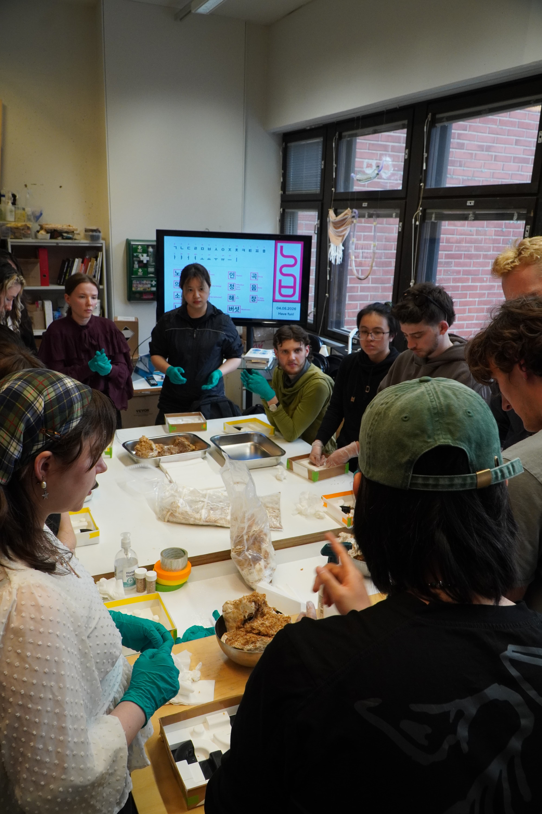
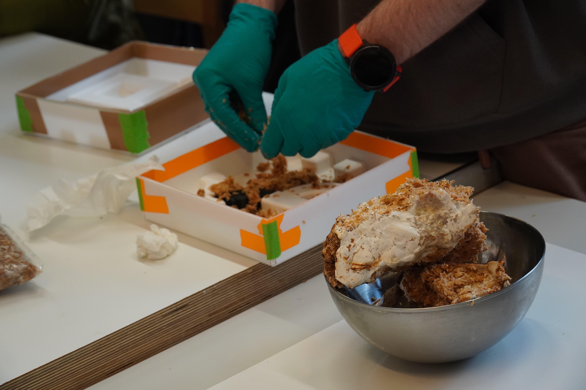
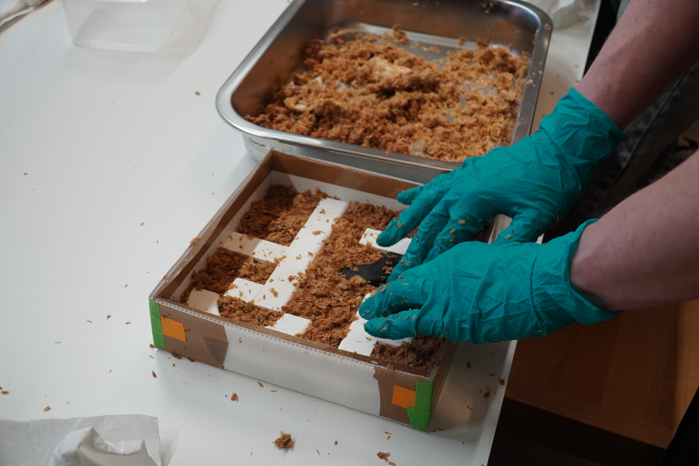
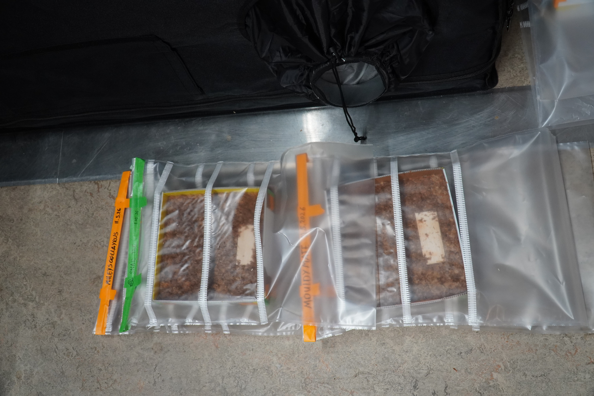
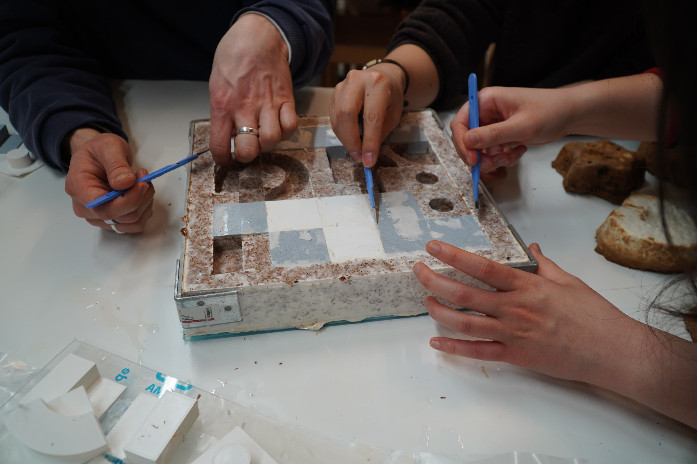
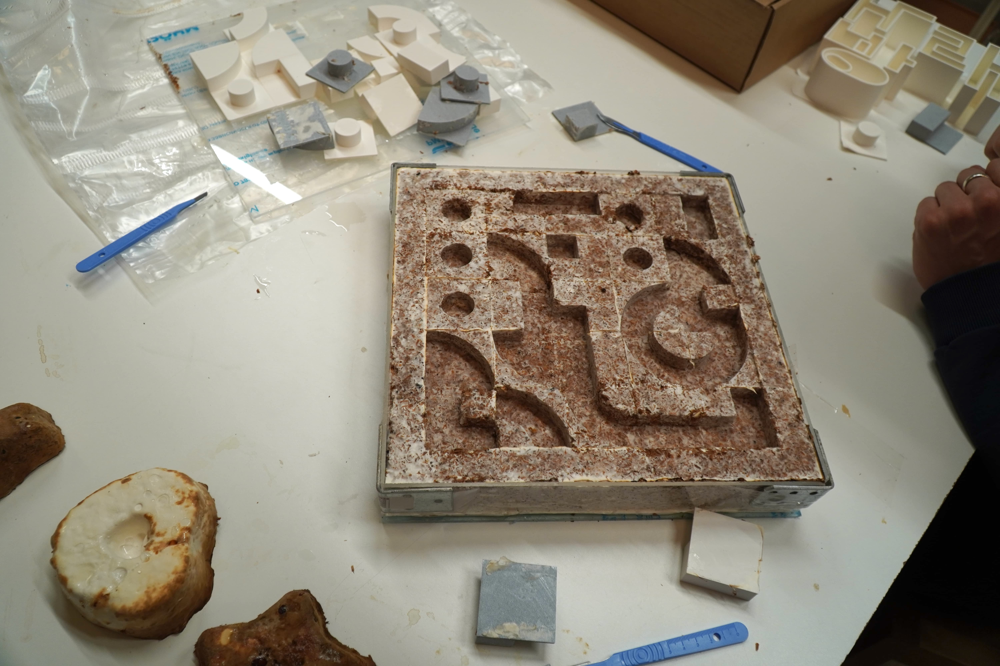

The mycelium design workshops were a total of 6 workshops (3 moulding and 3 demoulding) co-facilitated by Harvey Shaw, Yejin Youn, Shawn Kim, and Heya Kwon.
As part of our Noraebang project, we organized these workshops to create participatory soundproofing tiles using mycelium. We were lucky to have Harvey Shaw, a doctoral Mycelium researcher at Aalto University, join us and teach participants about mycelium and fungi-related design. Together with Harvey, Yejin, Shawn, and I planned the design components and structure of the workshops.
During the workshops, we took turns sniffing, touching, seeing, and feeling mycelium--mainly of tinder fungi--and molded them into designs using korean typographic tiles. The tiles were originally designed by Yejin Youn and 3D printed by us to fit the size of the soundproofing panels. The tiles are broken down components of the Korean written system Hangul (한글), and participants can combine them to create existing letters or new designs.
Over 50 people from Aalto and beyond (students, researchers, teachers, friends) were involved in designing their own panels. Together, we learned how to work with mycelium rather than imposing control over it (which was impossible anyway). It was refreshing to use our different senses to engage in a design process. And we got to meet interesting and kind people along the way.
The panels, grown and dried, will be installed in our communal karaoke booth to help soundproof and shape it. The sounds and designs of Noraebang are literally molded by our community.
We are so grateful for this experience. Thank you to all the participants who added their touch to Noraebang, BioMakers Lab for hosting us and our workshops, and Sustainability Action Booster for funding all the materials.
Workshop led by: Harvey Shaw
Co-facilitated by: Yejin Youn, Shawn Kim, Heya Kwon

Mycelium chunks (combined with woodchips) by the moulds that each participant designed.

From the second mycelium design workshop. Shawn is introducing the Hangul (한글) system, as shown on the screen in the back.

A participant is taking apart and fitting in the mycelium chunks (fed with woodchips) into their mould.

Mycelium chunks are tucked in nice and cozily, especially around the corners of the 3d prints to prevent any future breakage during demoulding.

Filled up moulds are labeled and stored inside ventilated bags, to be stored inside a climate-controlled tent in BioMakers Lab. Four days later, participants can demould it in the second part of the workshop.

The demoulding process involves gently taking off the 3d printed design pieces. Tools like exacto knives can help.

Mycelium demoulded four days after the design workshop. It will be flipped and go through another week of drying.
Mycelium grown for two weeks after the initial design and moulding workshop. The design reads in Hangul "정" (pronounced Jeong), which loosely means "Bonding with people, places, or things through shared time and experiences." The surface is white and fluffy.